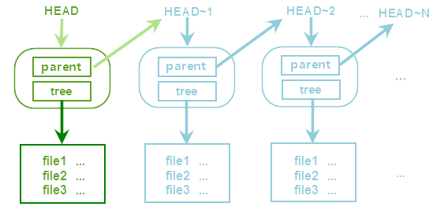

[Git使用手册]-4-历史版本浅析
引言
在前面的文章中已经介绍了如何将文件提交到"Repository"区域，也知道每次提交操作都会在"Repository"区域中创建一个历史版本，这篇文章将介绍如何查看这些历史版本中的内容。
文章目录
0×1.历史版本模型图
"Repository"中包含了很多被提交上来的版本，组成了一个版本链，最新提交的版本用"HEAD"指向，前一个版本用"HEAD~1"，以此类推；每个版本都包含一个"tree"对象和一个"parent"对象，每个"tree"中都包含不同层次的目录和文件，每个"parent"对象都指向前一个提交对象，如下图所示：
例如，当一个文件夹被初始化为git仓库目录后，在其中创建了一个文件"A"，第一次将A递交到"Repository"中时，将在"Repository"中创建第一个历史版本并用"HEAD"指向，这个历史版本的"tree"对象中，仅包含一个文件，即"A"；
这时，新建了一个文件B，将它提交到"Repository"中，将会在"Repository"中新建一个历史版本，并将"HEAD"指向最新提交的这个版本（"HEAD"永远指向最新的历史版本），同时初始化一个"HEAD~1"对象，指向上一个历史版本，即第一次提交的那个历史版本，这个新历史版本的"parent"对象指向第一个历史版本的"HEAD~1"对象，所以这两个对象的值是相同的，而最新的这个历史版本中的"tree"对象中，包含两个文件"A和B"，"tree"对象会将每次提交上来的文件和前面已经提交的文件一起保存成一个新的副本目录树，如果用户提交了删除文件，那么就从这个目录树中去掉这些文件，文件修改同理，以此类推；
0×2.历史版本查询实例
#首先创建一个新目录historydemo，并将这个目录初始化成git仓库目录 www@qingsword.com:~$ mkdir historydemo www@qingsword.com:~/historydemo$ git init 初始化空的 Git 版本库于 /home/qing/historydemo/.git/ #创建文件"file1" www@qingsword.com:~/historydemo$ touch file1 #写入三个字符"aaa"到文件"file1"中 www@qingsword.com:~/historydemo$ echo aaa >> file1 #提交"file1" www@qingsword.com:~/historydemo$ git add file1 www@qingsword.com:~/historydemo$ git commit -m 'commit file1' #注意提交的回显信息中有一行"[master （根提交） 68c0e66]"其中包含七位奇怪的字符串"68c0e66"，先记下这串字符串，稍后要用到 [master （根提交） 68c0e66] commit file1 1 file changed, 1 insertion(+) create mode 100644 file1 #根据第一小节的模型图的解释，最新提交的这个版本是用"HEAD"对象指向的，尝试打印"HEAD"对象中包含的值 www@qingsword.com:~/historydemo$ git cat-file -p HEAD #发现输出中仅包含下面三行，其中有一个"tree"对象，但并未发现"parent"对象，这是因为，我们在这个仓库中第一次提交数据，而"parent"对象需要指向上一个历史版本，但此时"Repository"中当前这个版本是"最初版"，所以"parent"对象为空，这也说明，当我们查看git历史版本链的时候，如果其中不包含"parent"对象，那么这就是版本的源头 tree b5dd13898f251af067d22f7e1ca7b0c29681f95c #除了"tree"和"parent"，历史版本中还包含下面两行信息，是前面模型图中没有列出的，第一行是版本作者（修改者），第二行代表这个历史版本最后的提交者 author QingSword <admin@qingsword.com> committer QingSword <admin@qingsword.com> #而输出的最后有一行"commit file1"，这就是我们提交时，在"-m"参数后面那段说明字符串了 commit file1 #前面我们记录了一串提交时回显的字符串"68c0e66"，使用下面的命令直接打印其内容，其内容居然和HEAD一模一样，这是为什么呢？可能大家已经注意到了，每个对象的后面都有一串长长的字符串，这其实是对象的值，也是git模型中这个对象唯一的标识符 www@qingsword.com:~/historydemo$ git cat-file -p 68c0e66 tree b5dd13898f251af067d22f7e1ca7b0c29681f95c author QingSword <admin@qingsword.com> committer QingSword <admin@qingsword.com> commit file1 #"HEAD"对象的值实际上是保存在本地仓库目录的".git/HEAD"文件中的，而这个文件又指向了另外一个文件，如下，注意看打印出来的那一串字符串开头的7个字符，是不是和我们上面记录的那个字符串一致？ www@qingsword.com:~/historydemo$ more .git/HEAD ref: refs/heads/master www@qingsword.com:~/historydemo$ more .git/refs/heads/master 68c0e66c7f20f3fa96d8ed2d137403e6d90b3d89 #由此可以推出，要想打印某个对象中的内容，只需要使用这个对象的这个唯一标识符就可以了，而git允许仅使用这个标识符的前几位代表一长串的标识符，只要开头的这几位与git目录中其他对象的标识符前几位不重复即可 #根据这个原理，现在打印出这个历史版本下"tree"对象中的内容，发现其中包含了一个文件对象，而文件也有一串唯一的标识符 www@qingsword.com:~/historydemo$ git cat-file -p b5dd138 100644 blob 72943a16fb2c8f38f9dde202b7a70ccc19c52f34 file1 #再利用文件的标识符将文件的内容打印出来，是不是看到了我们最初输入的那三个"a"？ www@qingsword.com:~/historydemo$ git cat-file -p 72943a1 aaa
接着上面的实验，在historydemo目录中新建一个子目录，并且在其中创建一个文件"file2"：
www@qingsword.com:~/historydemo$ mkdir subdir www@qingsword.com:~/historydemo$ cd subdir/ www@qingsword.com:~/historydemo/subdir/$ touch file2 #在file2中输入"bbb"三个字符 www@qingsword.com:~/historydemo/subdir/$ echo bbb >> file2 www@qingsword.com:~/historydemo/subdir/$ cd .. #将改动提交 www@qingsword.com:~/historydemo$ git add subdir/ www@qingsword.com:~/historydemo$ git commit -m 'subdir update' [master 290dd86] subdir update #查看"HEAD"对象内容，这次出现了"parent"对象 www@qingsword.com:~/historydemo$ git cat-file -p HEAD tree 44ad3f3c952f7127af9f7dcf253ac5ad4212731a parent 68c0e66c7f20f3fa96d8ed2d137403e6d90b3d89 author QingSword <admin@qingsword.com> committer QingSword <admin@qingsword.com> subdir update #查看"parent"对象的内容，发现与上一次提交的那个历史版本一致，也就是最初的历史版本 www@qingsword.com:~/historydemo$ git cat-file -p 68c0e tree b5dd13898f251af067d22f7e1ca7b0c29681f95c author QingSword <admin@qingsword.com> committer QingSword <admin@qingsword.com> commit file1 #根据模型图的说明，使用"HEAD~1"查看到的内容应该和上面的一致，而实际上"HEAD~1"的值就是"68c0e66c7f20f3fa96d8ed2d137403e6d90b3d89"，与最新的历史版本中"parent"对象的值相同 www@qingsword.com:~/historydemo$ git cat-file -p HEAD~1 tree b5dd13898f251af067d22f7e1ca7b0c29681f95c author QingSword <admin@qingsword.com> committer QingSword <admin@qingsword.com> commit file1 #现在打印这个新历史版本中"tree"对象的内容，发现下面包含第一个历史版本的文件"file1"，还包含我们新创建的"subdir"目录，所有的目录都是"tree"对象，而所有的文件都是"blob"对象（二进制大对象） www@qingsword.com:~/historydemo$ git cat-file -p 44ad3 100644 blob 72943a16fb2c8f38f9dde202b7a70ccc19c52f34 file1 040000 tree 34bd13402e30f72a60b71db017a2fd93b645b549 subdir #继续递归打印"subdir"中的内容 www@qingsword.com:~/historydemo$ git cat-file -p 34bd1 100644 blob f761ec192d9f0dca3329044b96ebdb12839dbff6 file2 #打印"subdir"中"file2"文件的内容 www@qingsword.com:~/historydemo$ git cat-file -p f761e bbb
现在，我们可以从最新的历史版本，往回查看任何一个历史版本下面的目录树的内容了，对于这些查询有下面几种种简写形式可以简化查询：
#下面命令中的HEAD对象可以使用标识符（290dd86）表示，查看最新的历史版本中，"subdir"目录下的"file2"文件中的内容
www@qingsword.com:~/historydemo$ git cat-file -p HEAD:subdir/file2
bbb
#查询最新的历史版本中，"tree"对象的内容
www@qingsword.com:~/historydemo$ git cat-file -p HEAD^{tree}
100644 blob 72943a16fb2c8f38f9dde202b7a70ccc19c52f34 file1
040000 tree 34bd13402e30f72a60b71db017a2fd93b645b549 subdir
#查询上一个历史版本中"file1"文件的内容，注意":"号后面的文件路径是相对仓库根目录的
www@qingsword.com:~/historydemo$ git cat-file -p HEAD~1:file1
aaa
上面的实例仅仅提交创建了两个历史版本，如果历史版本太多，使用"parent"参数逐个往回查看效率就太低了，可以使用下面的命令，一次性查看这个仓库目录所有提交的版本历史：
#详细显示所有版本历史，包含版本的唯一标识符（parent值），修改者，以及提交时间和提交说明，最上面为最新的提交版本；注意，"commit"后面的内容就是这个版本的所对应的唯一标识符，由上往下分别对应了"HEAD"、"HEAD~1"这两个对象的值 www@qingsword.com:~/historydemo$ git log | more commit 290dd86be2206ceffd5275df14651f64aeb5fddd Author: QingSword <admin@qingsword.com> Date: Mon Jun 5 13:31:15 2016 +0800 subdir update commit 68c0e66c7f20f3fa96d8ed2d137403e6d90b3d89 Author: QingSword <admin@qingsword.com> Date: Mon Jun 5 12:03:24 2016 +0800 commit file1 #精简输出，仅显示"parent"值的前7位和提交说明 www@qingsword.com:~/historydemo$ git log --oneline | more 290dd86 subdir update 68c0e66 commit file1
除了"git cat-file"命令之外，git还支持另外一个查看命令"git show"，其显示更加详细，大家可以尝试运行下面的命令，看看会返回什么内容：
www@qingsword.com:~/historydemo$ git show HEAD^{tree}
www@qingsword.com:~/historydemo$ git show HEAD~1
www@qingsword.com:~/historydemo$ git show HEAD:subdir/file2